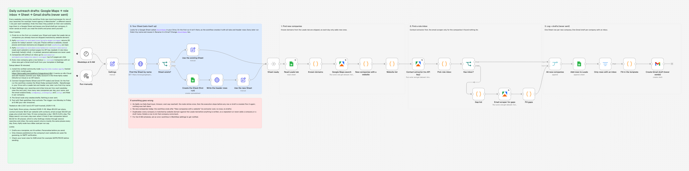

Daily Outreach Drafts from Google Maps (n8n Template)
Every weekday morning this n8n workflow finds new local businesses on Google Maps, looks up the inbox each one publishes on its own website, logs them in a Google Sheet and leaves one Gmail draft per company. It never sends an email: you read the drafts and press send yourself.

How it works
- Your Sheet. On the first run the workflow creates a Google Sheet called Daily outreach drafts - NanoScrape with a Leads tab. Later runs find it by name and skip every company already in it (matched by website domain).
- Find new companies. The Google Maps Scraper returns 20 places for today's search and city. Places without a website, closed places and known domains are dropped, and at most newPerDay are kept. Each weekday uses the next search × city pair from your lists, because the same search returns mostly the same places every day.
- Find a role inbox. The Website Contact Extractor reads each website's contact pages (no API key needed) and picks a role inbox such as info@, hello@ or events@. Companies still without one go to the Website Email Scraper (up to 5 pages per site).
- Log and draft. Every new company gets a row with status to review. Companies with an inbox also get a Gmail draft built from your subject and body template.
What it does and does not do
- Drafts only. The Gmail node creates drafts. Nothing is ever sent.
- Role inboxes only. It uses inboxes the company publishes for enquiries on its own website. It never picks a personal address, and it does not guess or verify addresses.
- Daily and incremental. The Sheet is its memory, so a repeated run never adds a company or a draft twice. Delete a row to let that company come back.
- No AI key. Drafts come from your own template, with {company}, {category} and {city} filled in. Personalise each one before you send.
- Cost-capped. Every Apify node has a maximum cost per run.
Setup
No n8n yet? n8n Cloud has a free trial; a self-hosted n8n works the same way.
- Import the template from n8n.io.
- Install the verified community node @apify/n8n-nodes-apify if your n8n does not have it yet (Apify's install guide), then connect your Apify account in the three Apify nodes (OAuth2 on n8n Cloud, or an API token).
- Connect Google Sheets and Gmail. The Sheet is created on the first run.
- Open the Settings node and fill in your searches and cities (one per line), how many new companies per day, your name, and the email subject and body.
- Click Test workflow, check the Sheet and your Gmail drafts, then activate it. It runs Monday to Friday at 6 AM in your n8n timezone.
What it costs
n8n, Google Sheets and Gmail cost nothing extra on top of your plans. The Apify actors charge per result at their Store prices:
| Step | Actor | Billed for |
|---|---|---|
| Find companies | Google Maps Scraper | each place returned (20 per run) |
| Role inbox | Website Contact Extractor | each website where contacts were found |
| Gaps only | Website Email Scraper | each page crawled |
About $0.08 per daily run in our test (10 new companies, Apify Store prices). Up to about $0.15 if every website needs the inbox lookup, and about $0.02 on days with nothing new. Each Apify node has a maximum cost per run. See each actor page for current prices.
FAQ
Does this workflow send emails?
No. The Gmail node only creates drafts. You read each draft and press send yourself.
Which email addresses does it use?
Only role inboxes such as info@, hello@ or events@ that the company publishes on its own website. It never picks a personal address, and it does not guess or verify addresses.
Do I need an OpenAI or other AI key?
No. The workflow needs Apify, Google Sheets and Gmail. The drafts are built from your own template, not written by AI.
What happens on a day with no new companies?
The Google Maps search still runs (about $0.02 for 20 places), then the workflow stops: no contact lookup, no rows, no drafts.
Actors in this template
- Google Maps Scraper (on Apify)
- Website Contact Extractor (on Apify)
- Website Email Scraper (on Apify)
More: Scrape Google Maps with n8n (step-by-step tutorial) and all templates.